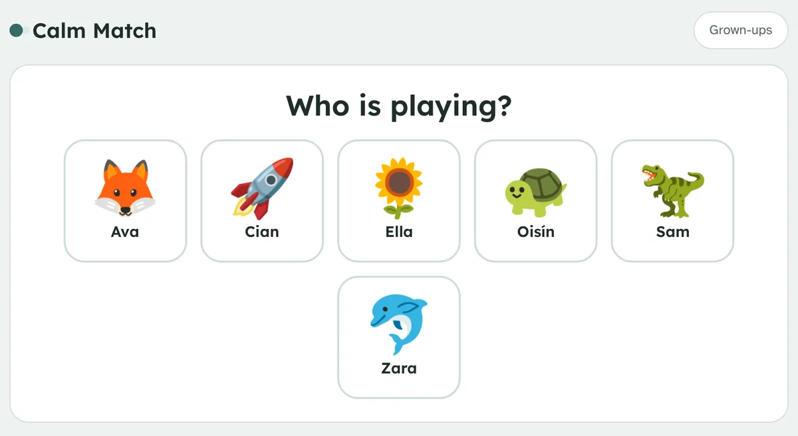

For schools and autism classes
Calm Match is free for every school: mainstream classes, special classes, autism classes and Gaelscoileanna. One shared tablet can hold a small class, and without an account nothing about the children ever leaves it.

One tablet for a whole class
- Turn on classroom mode in the Grown-ups area, under Children and device, then Classroom.
- Each child taps their own picture to start. When they finish, the tablet goes back to "Who is playing?" for the next child.
- Every child keeps their own language, settings, schedules, talk board and progress, all on that tablet.
- The Classroom page shows the whole class at a glance: sessions this week, when each child last played, answers right first time, skills learned, and what each child is working on. You can print it as a class summary.
- Use nicknames or first names only.
What's in it for your room
- 16 calm games: matching, sorting, counting, letters, patterns, feelings and more. Each one gets a little easier or harder on its own, for each child.
- Visual schedules with Now and Next, a First and Then board, a visual timer and a token board.
- A Talk board with 36 core words, and printable talk cards with the same pictures.
- Picture stories and how-tos for new or hard things. Starter stories like "Fire drill", "My new school" and "Washing hands" are ready to change: swap in names, places and your own photos.
- Sing along with 23 nursery songs, and an Alphabet book.
Calm by design
- No time limits in the games, no scores and no losing.
- No flashing, no sudden sounds, and no sound for a wrong answer.
- A Break button is always there.
- Sound, read-aloud, motion, contrast and button size can be set for each child.
For Gaelscoileanna and Irish-medium classes
- The games, schedules, Talk board, talk cards, Sing along and the Alphabet book all work in Irish.
- Each child's language is set separately, so one tablet can serve children who learn in English and children who learn in Irish.
- All 23 songs have Irish words written to fit the tune, shown side by side with the English on each song page.
- Read-aloud in Irish needs an Irish voice on the device. Most tablets don't have one, so read-aloud stays silent in Irish rather than mispronounce words. You can record your own voice for schedule steps, talk board words, story pages and your own pictures.
- The Irish is being checked by a fluent speaker, and corrections from teachers are very welcome at hello@calmmatch.com.
Between home and school
- A printable progress summary and a spreadsheet of sessions can be shared with parents or a therapist. The spreadsheet includes the child's nickname, so check it before you send it on.
- A backup file moves one child's set-up between home and school. It holds nicknames and any photos you added, so keep it somewhere private.
Privacy
- No account is needed. Without one, everything is saved on the tablet only and never sent to us.
- No ads, no tracking and no analytics.
- There is no place to enter a diagnosis, and we never ask for one.
- Photos and voice recordings you add stay on the tablet.
- To clear the tablet, use "Delete everything on this device" in the Grown-ups area, under Children.
Read the privacy policy, or the privacy page for children.
Practical things
- It runs in a web browser on tablets, Chromebooks and computers. There is nothing to install.
- After the first visit it works offline, which helps when the school Wi-Fi is patchy.
- It is free, with no paid features.
- Calm Match is a set of practice games. It is not a medical device, or a replacement for teaching or therapy, and it works best with a grown-up nearby.
Tell us what would help
If you teach in a special class, an autism class or a Gaelscoil and something would make Calm Match work better in your room, please email hello@calmmatch.com.